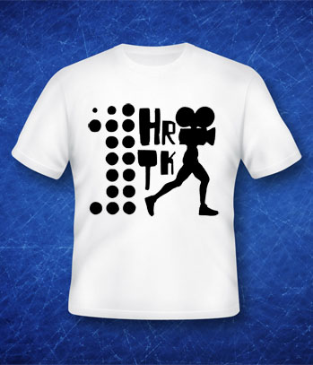

about
media
support
 C R E W S H I R T S |
 |
{kind=link}
Open to anyone with a passion for film, 1Hour/1Take is an exciting way to connect and collaborate with other film students and film enthusiasts. Participants work in small crews for one hour to create minute-long videos shot as one long take – each one competing for the coveted Audience Choice Award. At the end of the day, not only will you walk away with a new network of filmmakers, but also with a festival-screened video. Now that's a win-win situaiton.
RULES
• Completed videos must be no longer than one (1) minute in duration.
• Participants have one hour to choreograph, shoot and export their video.
• Your video must be orchestrated in one long take. You can shoot as many of those takes as you want, but there is no editing multiple shots or takes together. Your video goes straight from your camera to the screen.
• A prop will be given to you and your team when you check in at the beginning of the day.
• Only videos that make it to the finish line at the end of the hour will be screened and can compete for awards.
• You can use any equipment of your choice. Whether you bring your own microphones, or decide to use a cameraphone, it's all up to you!
• Those registering within the undergraduate deadline must show a current student ID upon check-in.
CREWS
All registered video racers will work in crews of at least four. Crews will be formed during the festival earlier that day, and will include one of our featured filmmaker or presenters. Between check-in and the video race shooting period, crew members will decide amongst themselves their positions and plan of attack.
SCREENING
Videos will be screened as .H264 Quicktime files.
REGISTRATION IS FREE
There are no fees to participate in the video race. Simply fill out the registration form to the right and we'll email you details of your registration when registration closes.
Space is limited, so register today!
Any questions? Shoot our Video Race Coordinator Christina Laine an e-mail at 1hour1take@visionsfilm.org.
 |
 |
 |
 |
 |
 |
 |
 |

Registration
Registration is now closed. See you at the races!
Copyright 2011 VISIONS Film Festival and Conference